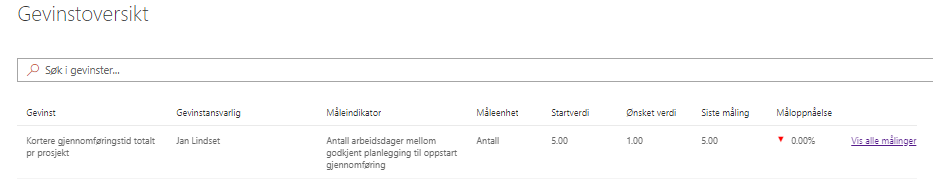
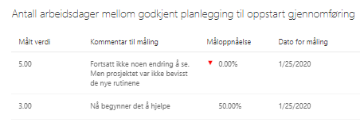
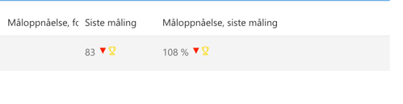

Gevinstoversikten blir automatisk generert når det er registrert gevinster, og målinger av gevinster, i prosjektet. Her får deltagere et oversiktsbilde over gevinster, samt status på disse indikert med tall og piler.

Ved å klikke på Vis alle målinger til høyre på en av linjene, vil du kunne se alle målinger utført for denne gevinsten.

Hvis måloppnåelsen er større enn 100% vil en liten pokal dukke opp ved siden av resultatet som vist under:

All tilgjengelig informasjon i gevinstoversikten vises også på porteføljenivå for de som har tilgang til prosjektet.